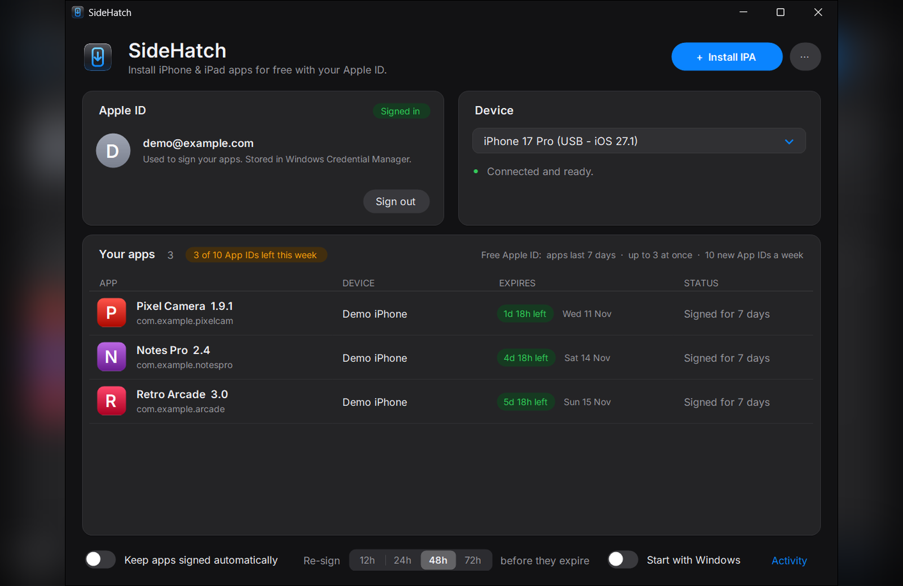
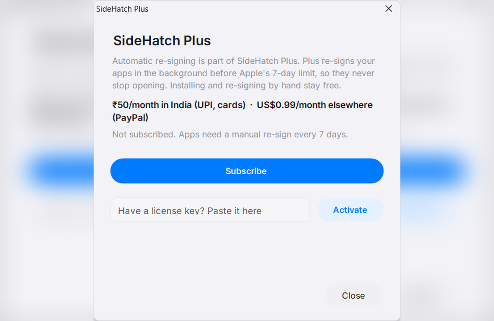

NewSee what's new in SideHatch›
Plug in your device, pick an IPA, and it lands on your home screen. A free Apple ID is enough.
Windows 10 and 11 · Installs for your user only

Plug in, pick an IPA, done. Devices are detected automatically.

Follows your Windows theme. Light and dark.

Optional SideHatch Plus renews your apps. Automatic re-signing in the background.